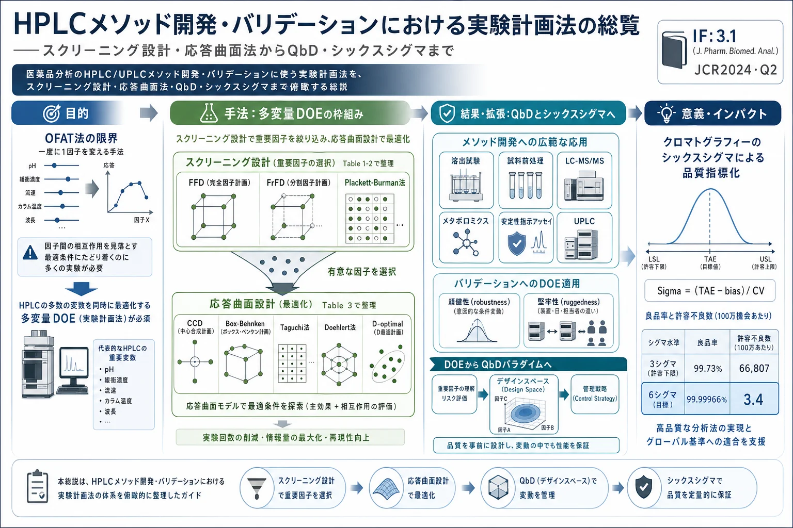
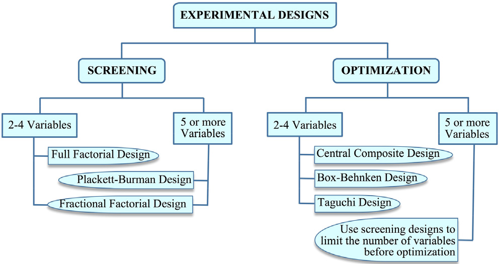
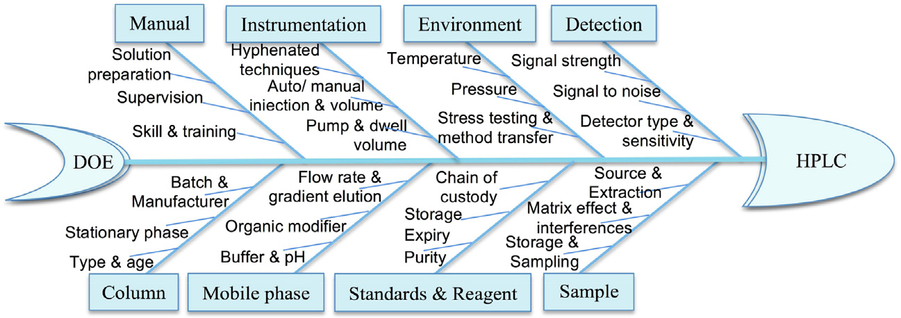
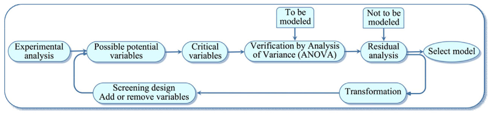
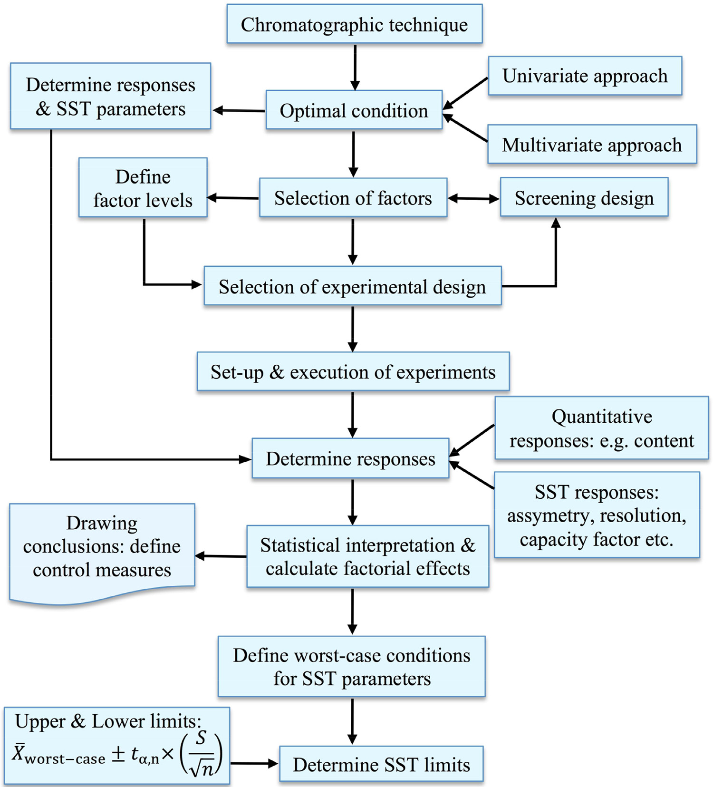
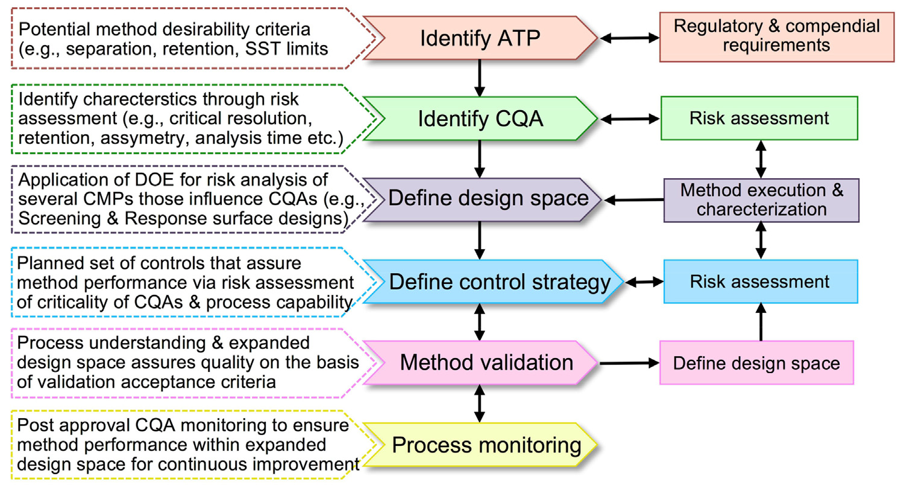

<!DOCTYPE html>
<html lang="ja">
<head>
<meta charset="utf-8">
<meta name="viewport" content="width=device-width, initial-scale=1">
<meta name="robots" content="noindex, nofollow, noarchive, nosnippet, noimageindex">
<meta name="googlebot" content="noindex, nofollow, noarchive, nosnippet, noimageindex">
<title>HPLCメソッド開発・バリデーションにおける実験計画法の総覧——スクリーニング設計・応答曲面法からQbD・シックスシグマまで</title>
<meta property="og:type" content="article">
<meta property="og:title" content="HPLCメソッド開発・バリデーションにおける実験計画法の総覧——スクリーニング設計・応答曲面法からQbD・シックスシグマまで">
<meta property="og:description" content="医薬品分析におけるHPLC/UPLCのメソッド開発とバリデーションに実験計画法（DOE）・ケモメトリクスをどう活かすかを俯瞰したJPBAの総説。HPLCは移動相pH・緩衝濃度・流速・カラム温度・検出波長など多数の変数が同時に効くため、一度に1因子を変えるOFAT（one factor at a time）法では真の最適に到達できない。本稿は、最も影響の大きい因子を絞り込むスクリーニング設計（完全実施要因FFD・一部実施要因FrFD・Plackett-Burman）と、選んだ因子の最適組合せを求める応答曲面設計（中心複合CCD・Box-Behnken・Taguchi・Doehlert・D-optimal・混合物設計）を整理し、ケモメトリクスの数学モデル（1次・交互作用・2次多項式）を解説する。応用は溶出試験・試料前処理とマトリックス効果・LC-MS/MS・メタボロミクスのデータ処理・安定性指示アッセイ・UPLCまで網羅し、メソッドバリデーションの頑健性（robustness）・堅牢性（ruggedness）へのDOE適用も扱う。さらに、DOEがQuality by Design（QbD、デザインスペース）へ発展した経緯と、クロマトグラフィーにおけるシックスシグマ（99.99966%良品＝100万機会あたり3.4不良、Sigma指標＝（TAE−bias）/CV）による品質評価を説明する。">
<meta property="og:image" content="https://sgt9863.github.io/paper-explainer/papers/assets/experimental-designs-hplc-method-development-validation-overview/ai-infographic.webp">
<meta name="twitter:card" content="summary_large_image">
<link rel="stylesheet" href="../assets/style.css">
<link rel="stylesheet" href="https://cdn.jsdelivr.net/npm/katex@0.16.11/dist/katex.min.css" integrity="sha384-nB0miv6/jRmo5UMMR1wu3Gz6NLsoTkbqJghGIsx//Rlm+ZU03BU6SQNC66uf4l5+" crossorigin="anonymous">
</head>
<body>
<header class="site-header">
  <a class="site-title" href="../index.html">KAMPO PAPER LAB</a>
  <button type="button" id="authBtn" class="auth-btn" hidden>ログイン</button>
</header>
<div class="layout"><main class="container">
<article class="paper" data-slug="experimental-designs-hplc-method-development-validation-overview"><h1>HPLCメソッド開発・バリデーションにおける実験計画法の総覧——スクリーニング設計・応答曲面法からQbD・シックスシグマまで</h1><div class="paper-meta"><span class="date">2026-07-08</span> <span class="tag">メソッド開発・QbD</span> <span class="tag">ケモメトリクス</span> <span class="tag">HPLC・UPLC</span> <span class="tag">規制・薬事</span> <span class="tag">レビュー</span> &middot; <a href="https://doi.org/10.1016/j.jpba.2017.05.006" target="_blank" rel="noopener">原文 (DOI)</a> &middot; <span class="src">8825810b-1s2.0S0731708517303746main.pdf</span> &middot; <button type="button" class="fav-toggle" data-slug="experimental-designs-hplc-method-development-validation-overview" aria-pressed="false" aria-label="お気に入り" title="お気に入り">☆</button> <span class="status-control">状況: <select class="status-select" data-slug="experimental-designs-hplc-method-development-validation-overview" aria-label="読書ステータス"><option value="unread">未読</option><option value="reading">読み途中</option><option value="read">既読</option></select></span></div><hr><a class="slide-hero" href="assets/experimental-designs-hplc-method-development-validation-overview/ai-infographic.webp" target="_blank" rel="noopener"></a><p>&lt;!-- Sahu PK, Ramisetti NR, Cecchi T, Swain S, Patro CS, Panda J. An overview of experimental designs in HPLC method development and validation. J Pharm Biomed Anal 147 (2018) 590-611. doi:10.1016/j.jpba.2017.05.006 の全訳密度日本語版。 --&gt;</p>
<blockquote><strong>補足（本サイトでの位置づけ）:</strong> 本論文は特定の生薬研究ではなく、<strong>HPLC/UPLC のメソッド開発・バリデーションに実験計画法（DOE）・ケモメトリクス・QbD・シックスシグマをどう体系的に使うか</strong> を俯瞰した総説である。当サイトが扱う漢方・生薬 QC 論文の多くは、指紋分析や多成分定量の「分析法」をゼロから作り、頑健にし、公定書レベルに引き上げる作業を伴う。本総説は、その作業全体の見取り図——「どの因子を絞り込み（スクリーニング設計）、どう最適化し（応答曲面法）、どうモデル化し（多項式）、どう検証し（頑健性・堅牢性）、どう品質保証の枠組み（QbD・シックスシグマ）に載せるか」——を提供する。同じ号の周辺で当サイトが扱った「望ましさ関数の総説（Talanta 2014）」がDOE の最適化フェーズに特化していたのに対し、本総説は <strong>開発から検証・品質保証までの全工程</strong> を俯瞰する点で相補的。生薬メソッド論文の QbD・DoE 記述を読み解く土台になる。</blockquote>
<hr>
<h1>書誌情報</h1>
<ul><li><strong>原題:</strong> An overview of experimental designs in HPLC method development and validation</li><li><strong>和題（本稿）:</strong> HPLCメソッド開発・バリデーションにおける実験計画法の総覧</li><li><strong>著者:</strong> Prafulla Kumar Sahu, Nageswara Rao Ramisetti（責任著者）, Teresa Cecchi（責任著者）, Suryakanta Swain, Chandra Sekhar Patro, Jagadeesh Panda</li><li><strong>所属:</strong> Raghu College of Pharmacy（Visakhapatnam, インド）／CSIR-インド化学技術研究所（IICT, Hyderabad）／ITT MONTANI 化学科（Fermo, イタリア）／SIMS College of Pharmacy（Guntur, インド）</li><li><strong>責任著者:</strong> N. R. Ramisetti（rnrao55@yahoo.com）, T. Cecchi（teresacecchi@tiscali.it）</li><li><strong>掲載誌:</strong> Journal of Pharmaceutical and Biomedical Analysis 147 (2018) 590–611（レビュー）</li><li><strong>DOI:</strong> 10.1016/j.jpba.2017.05.006</li><li><strong>受理経緯:</strong> 2017年2月13日受付 / 2017年5月1日改訂受付 / 2017年5月4日受理 / 2017年5月7日オンライン公開</li><li><strong>© 2017 Elsevier B.V.</strong></li><li><strong>キーワード:</strong> ケモメトリー／スクリーニング設計／最適化設計／メソッド開発・バリデーション／数学モデリング／Quality by Design／シックスシグマ</li><li><strong>雑誌インパクトファクター:</strong> 3.1（Journal of Pharmaceutical and Biomedical Analysis・JCR2024・Q2）</li></ul>
<p><strong>主要略号:</strong> 2D-HPLC（2次元HPLC）、ANOVA（分散分析）、BBD（Box-Behnken 設計）、CCD（中心複合設計）、DOE（実験計画法）、ELSD（蒸発光散乱検出）、ESI（エレクトロスプレーイオン化）、FFD（完全実施要因設計）、FMEA（故障モード影響解析）、FrFD（一部実施要因設計）、HILIC（親水性相互作用液体クロマトグラフィー）、LC–MS/MS（液体クロマトグラフィー・タンデム質量分析）、LSER（線形溶媒和エネルギー関係）、LSS（リーン・シックスシグマ）、MLR（重回帰）、OFAT/OFAT（一度に1因子）、OOS（規格外）、PBD（Plackett-Burman 設計）、QbD（Quality by Design）、QSRR（定量的構造-保持相関）、RSM（応答曲面法）、SST（システム適合性試験）、TD（Taguchi 設計）、UPLC（超高速液体クロマトグラフィー）。</p>
<hr>
<h1>要旨（Abstract）</h1>
<p>ケモメトリクス的アプローチは、多数の変数を同時に制御して望ましい分離を達成できるため、HPLC 実務の貴重な補完としてますます重視されている。さらに、その応用は限られた実験試行で有能な結果を得るための有意因子の効率的な同定・最適化を可能にする。本稿は、HPLC・UPLC における様々なケモメトリクス的アプローチの有用性を論じる：(i) 溶出試験・試料前処理から検出まで（従来検出器のタンデム質量分析への漸進的置換、安定性指示アッセイの重要性を考慮）のメソッド開発、(ii) スクリーニング設計・最適化設計によるメソッドバリデーション。最も影響力のある因子をスクリーニングする、あるいは選んだ因子の組合せを最適化するための適切な実験計画の種類の選択、およびケモメトリーの数学モデルを簡潔に振り返り、ケモメトリクス的アプローチの利点を強調する。メソッド開発における実験計画から Quality by Design（QbD）パラダイムへの進化をレビューし、クロマトグラフィーの品質指標としてのシックスシグマ実務を説明する。</p>
<hr>
<h1>1. 序論（Introduction）</h1>
<p>現象をモデル化することは、記述であれ解釈であれ、人間の思考の及ばない深い理解を提供する。一般に用いられる2種のモデルは <strong>理論的モデル</strong> と <strong>経験的モデル</strong> である。後者は理論的基盤に固執せず、データ駆動である。<strong>ケモメトリクス</strong>——数学的・統計的モデリングの適用によって化学系・プロセスの測定値をその状態に関係づける科学[<a href="#ref-1" class="cite">1</a>]——は、現代分析化学で確立された下位分野となった。</p>
<p>HPLC は多用途な分離技術だが、そのプロセスは多数の変数（移動相 pH・緩衝濃度・流速・カラム温度・検出波長など）を各ラン前に適切に調整せねばならず、時に難しい。ケモメトリクスの道具は、実験数の削減・試薬消費の低減・作業量の減少という利点から普及した。</p>
<p><strong>HPLC 分離</strong> は、試料混合物中の各化学実体がカラムの吸着材料や移動相に対してもつ固有の親和性に基づき、成分が異なる速度で移動して分離することによる。分離は移動相の極性・流速・pH・組成、試料マトリックスの性質、固定相の種類、温度・検出器などに依存する。数十年、HPLC メソッド開発は分析者の専門知識に頼る試行錯誤で行われ、最適化には <strong>一度に1因子を変え他を一定に保つ（OFAT: one factor at a time）</strong> 手法が使われた。これは望む分離は達成できても真の最適条件は保証できず、時間・費用・労力の点で過大で、誤りの修正が難しく予測不能で不成功にもなりうる[<a href="#ref-3" class="cite">3</a>]。</p>
<p>単一のクロマトグラフィー条件では全影響因子の情報を十分に扱えない。実験変数は連動しており、一度に1つずつ調整すると膨大な生データが生じ、真の最適系のための解釈がほぼ不可能になる。<strong>ケモメトリクス実験計画</strong> は、限られた実験数でデータを効率的にモデル化するよう計画することでこの問題を克服する。設計の主目的は、通常、因子とその相互作用がクロマトグラフィー分離に及ぼす影響を推定することである。</p>
<p>近年、Rozet らは分析法の QbD パラダイムの鍵であるデザインスペースの定義への実験計画の使用を論じ[<a href="#ref-4" class="cite">4</a>]、環境分析での汚染物質の定量/除去[<a href="#ref-5" class="cite">5</a>]、望ましさ関数による抽出手順など複雑系の最適化[<a href="#ref-6" class="cite">6</a>]、Dejaegher &amp; Vander Heyden による実験計画のセットアップ・データ解釈・応用[<a href="#ref-7" class="cite">7</a>, <a href="#ref-8" class="cite">8</a>]、Hibbert のチュートリアル[<a href="#ref-9" class="cite">9</a>]などがレビューされてきた。本稿は、医薬品分析における HPLC メソッドの最適化・バリデーションに焦点を当て、ケモメトリーの戦略と応用を記述する。</p>
<hr>
<h1>2. 実験計画（Experimental designs）</h1>
<p>実験計画は、様々なプロセスの操作条件の最適化、クロマトグラフィー分離性能の改善、高抽出効率の達成に頻繁に用いられる[<a href="#ref-10" class="cite">10</a>]。多数の因子がプロセスに同時に効くなかで、実験計画による有意因子の同定・最適化が、少ない実験試行で有能な結果を得る最も効果的な方法である。実験計画は「問題を体系的に解き情報豊かな結果を得るアプローチ」と定義できる[<a href="#ref-11" class="cite">11</a>]。最小の労力・時間・資源で最適かつ妥当な結果を得ることが第一目的である[<a href="#ref-12" class="cite">12</a>]。</p>
<p>目的により、全設計は <strong>スクリーニング設計</strong> と <strong>応答曲面設計（最適化設計）</strong> の2大カテゴリに分類される（原著 Fig. 1）。設計の種類と実験ドメインは原著 Table 1 に詳述。</p>
<figure><figcaption>図1. 実験計画法の分類（スクリーニング設計と最適化設計）。</figcaption></figure>
<h2>2.1. スクリーニング設計（Screening designs）</h2>
<p>HPLC プロセスには膨大な因子が影響するため、有意な効果をもたない因子は除外すべき。最も影響力のある因子のスクリーニングが、HPLC で実験計画を用いる第一目的となる。<strong>完全実施要因設計（FFD）・一部実施要因設計（FrFD）・Plackett-Burman 設計（PBD）</strong> がスクリーニング設計として頻用される[<a href="#ref-8" class="cite">8</a>, <a href="#ref-13" class="cite">13</a>, <a href="#ref-14" class="cite">14</a>]。これら2水準設計は多数の因子を少ない実験でスクリーニングでき、ANOVA や回帰分析で因子効果を計算する。分離技術・製剤・製品・品質管理プロセスの改善、頑健性（robustness）・堅牢性（ruggedness）試験（5節）に頻繁に適用される。スクリーニング設計の手順は頑健性/堅牢性試験と同一で、2水準間の区間の取り方が異なるのみ。各スクリーニング設計の長所・短所は原著 Table 2 に要約。</p>
<figure><figcaption>図3. HPLCメソッド開発・バリデーションにおける実験計画（影響因子を整理したフィッシュボーン図）。</figcaption></figure>
<h2>2.2. 応答曲面設計（Response surface designs）</h2>
<p>最適化は、プロセスの最適条件・設定を推奨するケモメトリクスの追加実務で、通常はスクリーニング設計に続いて潜在因子を選ぶ[<a href="#ref-16" class="cite">16</a>, <a href="#ref-17" class="cite">17</a>]。応答曲面設計には <strong>対称設計</strong> と <strong>非対称設計</strong> がある。3水準 FFD・中心複合設計（CCD）・Box-Behnken 設計（BBD）・Taguchi 設計（TD）・Doehlert 設計は、実験誤差推定用の中心点をもつ対称ドメインをカバー。<strong>D-optimal 設計</strong> などの非対称設計は非対称ドメインで非対称形をとる（対称ドメインでは対称形にもなる）。<strong>混合物設計（mixture designs）</strong> は混合物変数（組成）のみの最適化に適用。</p>
<p>応答曲面設計の統計解析は ANOVA・S/N 比・レンジ分析に基づく。<strong>レンジ分析</strong> は各因子の効果を求め最適水準を決定する（因子の平均のレンジ＝全水準の最大平均−最小平均。最大レンジの因子が最も強く性能に影響）。ただしレンジ分析は各因子の有意性を明確・定量的には決定できない。<strong>ANOVA</strong> では F 検定でデータを解析（各因子の F 値＝その因子の分散/実験誤差の分散）。各因子の寄与率＝総平方和に占めるその因子の平方和の割合。<strong>回帰分析</strong> は回帰関数で変数間の関係を推定（1次・2次モデルが一般的）。</p>
<figure><figcaption>図2. 実験計画における重回帰（MLR）モデリングの流れ（実験解析→分散分析→モデル選択）。</figcaption></figure>
<p>HPLC での実験計画の実施は4段階：(i) 便利な設計の選択、(ii) 適切なソフトウェア、(iii) 実験試行・データ解析、(iv) 解釈。最適化設計の HPLC メソッド開発への使用は原著 Table 3 に要約。</p>
<p><strong>主な応答曲面設計の特徴:</strong></p>
<ul><li><strong>3水準完全実施要因設計（3ᵏ FFD）:</strong> 各因子を3水準（低・中・高）で総当たり。曲率を捉えられるが、因子数 k が増えると実験数 3ᵏ が急増し（3因子で27ラン）、実務では因子数が少ないときに限られる。</li><li><strong>中心複合設計（CCD, central composite design）:</strong> 最も広く使われる応答曲面設計。2水準要因設計（立方点）＋中心点＋軸上の星点（axial/star points, ±α）からなり、2次モデルを効率的に推定できる。星点の距離 α で「外接（circumscribed, CCC）」「内接（inscribed, CCI）」「面心（face-centered, CCF）」に分かれる。回転可能性（rotatability, 中心から等距離で予測分散が一定）をもつよう α を選べる。</li><li><strong>Box-Behnken 設計（BBD）:</strong> 各因子を3水準でとるが、CCD と違い<strong>因子の極端値の組合せ（立方体の頂点）を含まない</strong>ため、因子を同時に最高/最低にしたくない場合（試薬節約・安全上の制約）に有利。3因子で15ラン程度と経済的で、HPLC 最適化で CCD と並んで頻用。</li><li><strong>Doehlert 設計:</strong> 実験ドメインを均一に六角形状で埋める設計。因子ごとに水準数が異なる（1因子目は5水準、2因子目は3水準など）ため、より精密に調べたい因子に多水準を割り当てられる。2変数で7ランと少ない。</li><li><strong>Taguchi 設計（TD）:</strong> 直交配列（例 L16＝2¹⁵）を用い、制御因子とノイズ因子を分けて S/N 比（signal-to-noise ratio）で頑健な条件を探す。工業的な頑健設計に由来し、変動に強いメソッド設定に向く。</li><li><strong>D-optimal 設計:</strong> 情報行列の行列式を最大化するように実験点を選ぶ計算最適化設計。非対称な実験ドメイン（一部の因子組合せが物理的に不可能な場合など）や、既定のラン数に制約があるときに柔軟に対応できる。</li><li><strong>混合物設計（mixture designs）:</strong> 移動相組成のように「成分の合計が100%」という制約下で組成比を最適化する設計（Simplex-lattice・Simplex-centroid など）。各成分を独立に動かせないため専用の設計・モデルを用いる。</li></ul>
<h3>原著 Table 1：液体クロマトグラフィーの実験計画と設計空間</h3>
<table>
<thead><tr><th>実験計画</th><th>水準</th><th>設計空間</th></tr></thead>
<tbody>
<tr><td>完全実施要因設計（FFD）</td><td>2または3水準</td><td>(a) 2因子2水準（2²）、(b) 3因子2水準（2³）、(c) 2因子3水準（3²）</td></tr>
<tr><td>一部実施要因設計（FrFD）</td><td>2水準</td><td>一部実施要因設計（2³⁻¹）</td></tr>
<tr><td>Plackett-Burman 設計（PBD）</td><td>2水準</td><td>2水準 FrFD に類似。N（4の倍数）ランで最大 N−1 因子を検討。複製実験・ダミー因子で実験誤差を決定</td></tr>
<tr><td>中心複合設計（CCD）</td><td>3水準</td><td>2変数・3変数の3水準外接中心複合設計</td></tr>
<tr><td>Box-Behnken 設計（BBD）</td><td>3水準</td><td>3変数の Box-Behnken 設計</td></tr>
<tr><td>Taguchi 設計（TD）</td><td>2水準</td><td>L16 直交配列（2¹⁵）の線形エイリアスモデル</td></tr>
<tr><td>Doehlert 設計</td><td>複数水準</td><td>2変数で7ラン</td></tr>
<tr><td>D-optimal 設計</td><td>2水準</td><td>2因子で9ラン</td></tr>
<tr><td>Hybrid 設計</td><td>複数水準</td><td>合計100%の3成分の hybrid 設計</td></tr>
</tbody></table>
<hr>
<h1>3. ケモメトリーの数学モデル（Mathematical models）</h1>
<p>モデルとは、応答変数の独立変数への依存を定義する式で、経験的または理論的[<a href="#ref-3" class="cite">3</a>]。経験的モデルは因子-応答関係を記述する方法を提供し、多くの場合（常にではないが）与えられた次数の多項式の集合である。最も一般的な線形モデル（式1–3）：</p>
<p>$$ E(y) = \beta_0 + \beta_1 X_1 + \beta_2 X_2 \tag{1} $$</p>
<p>$$ E(y) = \beta_0 + \beta_1 X_1 + \beta_2 X_2 + \beta_{12} X_1 X_2 \tag{2} $$</p>
<p>$$ E(y) = \beta_0 + \beta_1 X_1 + \beta_2 X_2 + \beta_{12} X_1 X_2 + \beta_{11} X_1^2 + \beta_{22} X_2^2 \tag{3} $$</p>
<p>E(y)＝測定応答、X1・X2＝選んだ因子、β0＝切片、β1・β2＝1次パラメータ、β12＝交互作用パラメータ、β11・β22＝2次パラメータ。係数は MLR（重回帰）または対比法で計算。式(1)(2)は変数に線形で3次元空間の平面・ねじれ平面を、式(3)は2次項による曲率をもつ2次モデルを表す。</p>
<p><strong>3次元応答曲面プロット</strong> は独立変数の寄与を示し系の挙動理解を助ける。<strong>等高線プロット</strong> は応答曲面の断面（スライス）を表す。<strong>正規化プロット</strong> は正規化因子水準（N）と応答変数の関係を図示し、因子水準が等間隔でない（中心水準が高低の平均でない）とき用いる。</p>
<hr>
<h1>4. ケモメトリクス設計の応用（Application）</h1>
<h2>4.1. HPLC メソッド開発</h2>
<h3>4.1.1. 溶出試験（Dissolution studies）</h3>
<p>製剤の溶出プロファイルに影響する因子（媒体 pH・界面活性剤・回転数など）を DOE で最適化し、判別力ある溶出法を効率的に開発できる。</p>
<h3>4.1.2. 試料前処理とマトリックス効果</h3>
<p>SPE・PLE・MEPS など試料前処理の抽出効率やマトリックス効果（とくに LC-MS のイオン抑制/増強）の因子を DOE で系統的に最適化する。</p>
<h3>4.1.3. LC-MS/MS 決定</h3>
<p>イオン源パラメータ（ESI 電圧・ガス流量・温度）や移動相添加剤を DOE で最適化し、感度・イオン化効率を高める。</p>
<h3>4.1.4. メタボロミクスの LC-MS データ処理</h3>
<p>非標的メタボロミクスのデータ前処理・特徴抽出パラメータの最適化に多変量設計を適用。</p>
<h3>4.1.5. 安定性指示アッセイ（Stability-indicating assays）</h3>
<p>原薬とその分解物・不純物を分離する安定性指示法の開発で、グラジエント条件・pH・温度を DOE で最適化し、臨界分離（critical resolution）を確保する。</p>
<h3>4.1.6. 超高速液体クロマトグラフィー（UPLC）</h3>
<p>サブ2 µm 粒子・高圧の UPLC は分析時間短縮・高分離だが変数感度が高く、DOE による頑健な条件設定がとくに有用。</p>
<h3>4.1.7. その他の応用</h3>
<p>2D-HPLC、キラル分離、HILIC、SFC、イオン交換・疎水性相互作用・アフィニティクロマトグラフィー（mAbs 精製など）での DOE 応用。</p>
<p>原著 Table 5 は、多数の実例（RP-LC/UHPLC/HILIC の不純物プロファイリング・安定性指示・キラル分離など、対象薬物・用いた設計〔FFD・FrFD・PBD・CCD・BBD・Dry Lab モデリング・モンテカルロシミュレーション・Derringer 望ましさ〕・検討因子・応答）を一覧化する。例：ダビガトラン不純物（BBD＋モンテカルロ）、スマトリプタン/ナプロキセン（FrFD＋モンテカルロ）、イマチニブ関連不純物（BBD＋Dry Lab）、デキストロメトルファン分解物（PBD＋CCD＋Derringer 望ましさ＋グリーンネススコア）、イオヘキソール（PBD＋BBD＋モンテカルロ）など。</p>
<hr>
<h1>5. HPLC メソッドバリデーション（Method validation）</h1>
<h2>5.1. 頑健性（Robustness）</h2>
<p><strong>「頑健性（robustness）」</strong> は、メソッドパラメータの小さな意図的変動に対して分析結果が影響を受けずに保たれる能力の尺度で、通常使用時の信頼性を示す。スクリーニング設計（FFD・FrFD・PBD）で複数因子（流速・pH・カラム温度・移動相組成など）の小変動が応答（分離度・保持時間・面積など）に及ぼす影響を同時に評価する。手順はスクリーニング設計と同一で、因子の2水準間区間を「小変動」に設定する点が異なる。文献の LC メソッド頑健性試験のレビューを提示。</p>
<figure><figcaption>図4. 頑健性試験とシステム適合性試験（SST）限界の決定。</figcaption></figure>
<h2>5.2. 堅牢性（Ruggedness）</h2>
<p><strong>「堅牢性（ruggedness）」</strong> は、異なる実験室・分析者・装置・試薬ロット・日など、通常予想される異なる条件下で同一試料を分析したときの結果の再現性の程度。ISO 用語では中間精度/再現性に対応。DOE で複数の「外部」因子（分析者・装置・カラムバッチ・日）を同時に評価できる。</p>
<hr>
<h1>6. ケモメトリクス的アプローチの利点</h1>
<ul><li>実験数・試薬消費・作業量の削減。</li><li>因子間の相互作用と非線形関係の把握。</li><li>実験ドメイン全体での系の大局的理解と数学モデルによる任意点の応答予測。</li><li>OFAT が陥る局所最適を避け、真の（大域的）最適を見出せる。</li><li>てこ比等で各実験点の情報の質を把握できる。</li></ul>
<hr>
<h1>7. DOE から Quality by Design（QbD）への拡張</h1>
<h2>7.1. LC メソッド開発の QbD パラダイム</h2>
<p>QbD は、あらかじめ定めた目的（分析ターゲットプロファイル）から出発し、品質をプロセスに作り込む枠組みである。LC メソッド開発では、DOE で <strong>デザインスペース（design space）</strong>——その内側なら分析品質が保証される操作因子の多次元領域——を構築することが鍵となる[<a href="#ref-4" class="cite">4</a>]。原著 Fig. 5 は QbD 駆動のクロマトグラフィーメソッド開発の主要ステップ（分析ターゲットプロファイル定義→重要メソッド属性 CMA・重要メソッドパラメータ CMP の特定→リスクアセスメント→DOE によるデザインスペース構築→管理戦略）を示す。多くの例が「HPLC メソッド開発・バリデーションは QbD なしには不完全」であることを実証（Table 5）。イオン交換・疎水性相互作用クロマトグラフィー（IEX・HIC）の重要メソッドパラメータ（CMP）も批判的にレビューされている[<a href="#ref-106" class="cite">106</a>]。</p>
<figure><figcaption>図5. QbD駆動のクロマトグラフィーメソッド開発の主要ステップ（ATP定義→CMA/CMP特定→リスク評価→設計空間→管理戦略）。</figcaption></figure>
<hr>
<h1>8. クロマトグラフィーにおけるシックスシグマ実務</h1>
<p><strong>シックスシグマ（Six-Sigma）</strong> は、プロセスの統計的モデリングに関連するプロセス改善の技法・道具の集合である。元来、製造プロセスが規格内の出力を非常に高い割合で生産する能力を指し、<strong>シグマ格付け（sigma rating）</strong> は無欠陥出力の割合でプロセス歩留まりを示す。<strong>シックスシグマ・プロセスとは、全出力の 99.99966% が統計的に無欠陥と期待される——すなわち100万機会あたり 3.4 の不適合出力に相当する——プロセス</strong> である。ISO は2011年に「ISO 13053:2011」でシックスシグマ・プロセスを定義した。</p>
<p>シグマ指標（sigma metrics）は品質指標である。定量アッセイでは、シグマ値の計算前に不精度（%CV）と不正確さ（%bias）を評価する。bias は、実験室で特定法で得た値を参照法で得た値と比較して算出（式16）：</p>
<p>$$ \%bias = \frac{\text{lab value} - \text{reference value}}{\text{reference value}} \times 100 \tag{16} $$</p>
<p>シグマ数は、不精度と不正確さをシグマ指標に関係づける式(17)で計算：</p>
<p>$$ \text{Sigma metric} = \frac{TAE - bias}{CV} \tag{17} $$</p>
<p>TAE＝総許容誤差（Total Allowable Error）。プロセスの変動係数が上がるか不正確さが増すと、平均と最も近い規格限界の間に収まる標準偏差の数が減り、シグマ数が下がって規格外品の可能性が増す。3シグマ超の結果は許容されるが、<strong>最低でも6シグマを目指すことが重要</strong>。</p>
<p>シグマ数と不良率は一対一に対応する。<strong>6シグマ＝100万機会あたり3.4不良（DPMO, defects per million opportunities）＝99.99966%良品</strong>、5シグマ＝233 DPMO、4シグマ＝6210 DPMO、3シグマ＝66,807 DPMO、と1シグマ上がるごとに不良率が桁違いに下がる。したがってシグマ指標が高い分析法ほど、日常運用での「規格外結果」の発生確率が低く、品質管理コスト（再検査・是正）も小さくて済む。</p>
<p>クロマトグラフィープロセスは定義・測定・解析・改善・管理（DMAIC: Define-Measure-Analyze-Improve-Control）できる特性をもつため、シックスシグマの全体プロセス管理になじむ。DMAIC の各段階で、測定（Measure）に分析法バリデーション、解析（Analyze）に ANOVA・回帰、改善（Improve）に応答曲面最適化、管理（Control）に管理図・システム適合性を割り当てられ、DOE/QbD の枠組みと自然につながる。実例として、糖化ヘモグロビン（HbA1c）アッセイ——糖尿病ケアの要——で、IFCC の HbA1c 標準化タスクフォースがシグマ指標を実験室内/間の品質目標設定に採用。全自動 IE-HPLC 分析装置（Tosoh HLC-723GX）の分析的検証・品質評価がシグマ指標の使用例として提示された[<a href="#ref-154" class="cite">154</a>]（凍結乾燥試料 n=5 で参照法に対する bias を算出）。</p>
<blockquote><strong>訳者補足（TAE・bias・CV の関係）:</strong> シグマ指標 (TAE−bias)/CV は、「許容できる誤差の枠（TAE）から系統誤差（bias）を差し引いた余裕を、ばらつき（CV＝1σ）が何個分収まるか」を表す。値が大きいほど（＝ばらつきに対して許容枠に余裕があるほど）不良が出にくい。6以上なら100万回に3.4回の不良水準で、生薬 QC の定量法でも「装置間・日間のばらつきに対して規格がどれだけ堅いか」を1数値で示す実務指標として使える。</blockquote>
<hr>
<h1>9. 今後の展望（Future prospectives）</h1>
<p>ケモメトリクス・DOE・QbD・シックスシグマの統合が、より頑健で規制対応した分析法開発を可能にする。タンデム質量分析・UPLC・多次元分離の普及に伴い、多変量設計の重要性は増す。グリーンネス（環境負荷）を応答に組み込む最適化や、リアルタイムのプロセス分析技術（PAT）との融合が進む。</p>
<hr>
<h1>10. 結論（Conclusions）</h1>
<p>HPLC メソッド開発・バリデーションにおけるケモメトリクス的アプローチは、少ない実験で多数の変数を同時に制御し、因子の統計的有意性を評価しながら望ましい分離を達成する強力な手段である。スクリーニング設計で有意因子を絞り込み、応答曲面設計で最適化し、多項式モデルで系を記述し、頑健性・堅牢性で検証する——この一連の流れは QbD パラダイムへ発展し、シックスシグマが品質指標を与える。OFAT の時代から多変量・QbD の時代へ、分析法開発は体系化・客観化されつつある。</p>
<hr>
<h1>主要参考文献（抜粋）</h1>
<ul><li>[<a href="#ref-1" class="cite">1</a>] ケモメトリクスの定義（数学的・統計的モデリングによる化学系測定の状態関連づけ）。</li><li>[<a href="#ref-4" class="cite">4</a>] Rozet E, et al. 実験計画によるデザインスペース定義（QbD の鍵）。</li><li>[<a href="#ref-7" class="cite">7</a>, <a href="#ref-8" class="cite">8</a>] Dejaegher B, Vander Heyden Y. 実験計画のセットアップ・データ解釈・応用のチュートリアルレビュー。</li><li>[<a href="#ref-9" class="cite">9</a>] Hibbert DB. 分析・分離技術の最適化・バリデーションのためのデザインスペース。</li><li>ISO 13053:2011（シックスシグマ・プロセスの定義）。</li><li>[<a href="#ref-154" class="cite">154</a>] IE-HPLC HbA1c 分析装置（Tosoh HLC-723GX）のシグマ指標による品質評価。</li><li>Table 5 の多数の応用例（RP-LC/UHPLC/HILIC の不純物プロファイリング・安定性指示・キラル分離等、FFD/FrFD/PBD/CCD/BBD/Dry Lab/モンテカルロ/Derringer 望ましさを用いた実例）。</li></ul>
<p>（全文献は原著参照。）</p>
<h2>参考文献</h2>
<ol class="references"><li id="ref-1">M. Otto, Chemometrics− Statistic and Computer Application in Analytical Chemistry, third ed., Wiley−VCH, 2017.</li><li id="ref-2">Y. Vander Heyden, A. Nijhuis, J. Smeyers-Verbeke, B.G.M. Vandeginste, D.L. Massart, Guidance for robustness: ruggedness tests in method validation, J. Pharm. Biomed. Anal. 24 (2001) 723–753.</li><li id="ref-3">B. Singh, R. Kumar, N. Ahuja, Optimizing drug delivery systems using systematic design of experiments. part I: fundamental aspects, Crit. Rev. Ther. Drug Carrier Syst. 22 (2004) 27–105.</li><li id="ref-4">E. Rozet, P. Lebrun, P. Hubert, Design Spaces for analytical methods, TrAC Trends Anal. Chem. 42 (2013) 157–167.</li><li id="ref-5">M.P. Callao, Multivariate experimental design in environmental analysis, TrAC Trends Anal. Chem. 62 (2014) 86–92.</li><li id="ref-6">L.V. Candioti, M.M. De Zan, M.S. Cámara, H.C. Goicoechea, Experimental design and multiple response optimization. Using the desirability function in analytical methods development, Talanta 124 (2014) 123–138.</li><li id="ref-7">B. Dejaegher, Y. Vander Heyden, Experimental designs and their recent advances in set−up, data interpretation, and analytical applications, J. Pharm. Biomed. Anal. 56 (2011) 141–158.</li><li id="ref-8">B. Dejaegher, Y. Vander Heyden, The use of experimental design in separation science, Acta Chromatogr. 21 (2009) 161–201.</li><li id="ref-9">D.B. Hibbert, Experimental design in chromatography: a tutorial review, J. Chromatogr. B 910 (2012) 2–13.</li><li id="ref-10">ICH, Pharmaceutical development Q8(R2), in: International Conference on Harmonisation, IFPMA, Geneva (Switzerland), 2009.</li><li id="ref-11">USFDA, Pharmaceutical cGMP for the 21st century − a risk−based approach, in: Second Progress Report and Implementation Plan Introduction, Food and Drug Administration, Rockville, MD, 2003.</li><li id="ref-12">USFDA, Guidance for Industry: PAT − A Framework for Innovative Pharmaceutical Development, Manufacturing, and Quality Assurance, Food and Drug Administration, Rockville MD, 2004.</li><li id="ref-13">B. Dejaegher, Y. Vander Heyden, Robustness tests of CE methods, in: S.J.M. Ahuja (Ed.), Capillary Electrophoresis Methods for Pharmaceutical Analysis, Elsevier, Academic Press, Amsterdam, 2008, pp. 185–224.</li><li id="ref-14">B. Dejaegher, Y. Vander Heyden, Ruggedness and robustness testing, J. Chromatogr. A 1158 (2007) 138–157.</li><li id="ref-15">P. Sibinovi´c, A. ˇSmelcerovi´c, R. Pali´c, S. Ðor – devi´c, V. Marinkovi´c, Ruggedness testing of an HPLC method for the determination of ciprofloxacin, J. Serb. Chem. Soc. 70 (2005) 979–986.</li><li id="ref-16">G.E.P. Box, J.S. Hunter, W.G. Hunter, Statistics for Experimenters: Design, Innovation, and Discovery, Wiley−Interscience, Hoboken NJ, 2005.</li><li id="ref-17">R.E. Bruns, I.S. Scarminio, N.B.d. Barros, Statistical Design − Chemometrics, Elsevier, Amsterdam, 2006.</li><li id="ref-18">B. Basak, B. Bhunia, S. Dutta, A. Dey, Enhanced biodegradation of 4−chlorophenol by Candida tropicalis PHB5 via optimization of physicochemical parameters using Taguchi orthogonal array approach, Int. Biodeterior. Biodegrad. 78 (2013) 17–23.</li><li id="ref-19">M.J. Cózar-Bernal, A.M. Rabasco, M.L. González-Rodríguez, Development and validation of a high performance chromatographic method for determining sumatriptan in niosomes, J. Pharm. Biomed. Anal. 72 (2013) 251–260.</li><li id="ref-20">N. Panda, S. Nandi, T. Chakraborty, Isolation, Yield optimization and Characterization of bioactive compounds from soil bacteria utilizing HPLC and Mass Spectra, Asian J. Biomed. Pharm. Sci. 1 (2011) 0–07.</li><li id="ref-21">V.R. de Almeida Borges, A.F. Ribeiro, C. de Souza Anselmo, L.M. Cabral, V.P. de Sousa, Development of a high performance liquid chromatography method for quantification of isomers −caryophyllene and −humulene in copaiba oleoresin using the Box−Behnken design, J. Chromatogr. B 940 (2013) 35–41.</li><li id="ref-22">M. Bourdat-Deschamps, J.J. Daudin, E. Barriuso, An experimental design approach to optimise the determination of polycyclic aromatic hydrocarbons from rainfall water using stir bar sorptive extraction and high performance liquid chromatography−fluorescence detection, J. Chromatogr. A 1167 (2007) 143–153.</li><li id="ref-23">F. Kamarei, H. Ebrahimzadeh, Y. Yamini, Optimization of ultrasound−assisted emulsification microextraction with solidification of floating organic droplet followed by high performance liquid chromatography for the analysis of phthalate esters in cosmetic and environmental water samples, Microchem. J. 99 (2011) 26–33.</li><li id="ref-24">A. Stafiej, K. Pyrzynska, A. Ranz, E. Lankmayr, Screening and optimization of derivatization in heating block for the determination of aliphatic aldehydes by HPLC, J. Biochem. Bioph. Methods 69 (2006) 15–24.</li><li id="ref-25">S. Beg, K. Kohli, S. Swain, M.S. Hasnain, Development and validation of RP−HPLC method for quantitation of amoxicillin trihydrate in bulk and pharmaceutical formulations using box−behnken experimental design, J. Liq. Chromatogr. Related Technol. 35 (2012) 393–406.</li><li id="ref-26">J.Z. Song, C.F. Qiao, S.L. Li, Y. Zhou, M.T. Hsieh, H.X. Xu, Rapid optimization of dual−mode gradient high performance liquid chromatographic separation of Radix et Rhizoma Salviae Miltiorrhizae by response surface methodology, J. Chromatogr. A 1216 (2009) 7007–7012.</li><li id="ref-27">Y.J. Zhang, W.J. Gong, J.M. Zhang, Y.P. Zhang, S.M. Wang, L. Wang, H.Y. Xue, Optimization strategies using response surface methodologies in high performance liquid chromatography, J. Liq. Chromatogr. Related Technol. 31 (2008) 2893–2916.</li><li id="ref-28">P.K. Sahu, C.S. Patro, Application of chemometric response surface methodology in development and optimization of a RP-HPLC method for the separation of metaxalone and its base hydrolytic impurities, J. Liq. Chromatogr. Related Technol. 37 (2013) 2444–2464.</li><li id="ref-29">R.N. Dash, M. Habibuddin, T. Humaira, A.A. Patel, Application of quality by design for the optimization of an HPLC method to determine ezetimibe in a P.K. Sahu et al. / Journal of Pharmaceutical and Biomedical Analysis 147 (2018) 590–611 609 supersaturable self-Nanoemulsifying formulation, J. Liq. Chromatogr. Related Technol. 38 (2015) 874–885.</li><li id="ref-30">P.K. Sahu, S.K. Swain, G.V.S. Prasad, Y.L.N. Murthy, RP−HPLC method for determination of metaxalone using Box−Behnken experimental design, J. Appl. Biopharm. Pharmacokinet. 2 (2015) 40–49.</li><li id="ref-31">P. Hashemi, F. Raeisi, A.R. Ghiasvand, A. Rahimi, Reversed−phase dispersive liquid−liquid microextraction with central composite design optimization for preconcentration and HPLC determination of oleuropein, Talanta 80 (2010) 1926–1931.</li><li id="ref-32">S. Khodadoust, M. Ghaedi, Optimization of dispersive liquid–liquid microextraction with central composite design for preconcentration of chlordiazepoxide drug and its determination by HPLC−UV, J. Sep. Sci. 36 (2013) 1734–1742.</li><li id="ref-33">T. Sivakumar, R. Manavalan, C. Muralidharan, K. Valliappan, Multi−criteria decision making approach and experimental design as chemometric tools to optimize HPLC separation of domperidone and pantoprazole, J. Pharm. Biomed. Anal. 43 (2007) 1842–1848.</li><li id="ref-34">P. Li, G. Xu, S.P. Li, Y.T. Wang, T.P. Fan, Q.S. Zhao, Q.W. Zhang, Optimizing ultra−performance liquid chromatographic analysis of 10 diterpenoid compounds in salvia miltiorrhiza using central composite design, J. Agric. Food Chem. 56 (2008) 1164–1171.</li><li id="ref-35">Y.P. Zhang, Y.J. Zhang, W.J. Gong, A.I. Gopalan, K.P. Lee, Rapid separation of Sudan dyes by reverse−phase high performance liquid chromatography through statistically designed experiments, J. Chromatogr. A 1098 (2005) 183–187.</li><li id="ref-36">T. Sivakumar, R. Manavalan, C. Muralidharan, K. Valliappan, An improved HPLC method with the aid of a chemometric protocol: simultaneous analysis of amlodipine and atorvastatin in pharmaceutical formulations, J. Sep. Sci. 30 (2007) 3143–3153.</li><li id="ref-37">D.K. Sahoo, P.K. Sahu, Chemometric approach for RP−HPLC determination of azithromycin, secnidazole, and fluconazole using response surface methodology, J. Liq. Chromatogr. Related Technol. 38 (2015) 750–758.</li><li id="ref-38">P.D. Kalariya, D. Namdev, R. Srinivas, S. Gananadhamu, Application of experimental design and response surface technique for selecting the optimum RP–HPLC conditions for the determination of moxifloxacin HCl and ketorolac tromethamine in eye drops, J. Saudi Chem. Soc. (2014), http:// dx.doi.org/10.1016/j.jscs.2014.04.004 (in press).</li><li id="ref-39">M. Kurmi, S. Kumar, B. Singh, S. Singh, Implementation of f design of experiments for optimization of forced degradation conditions and development of a stability−indicating method for furosemide, J. Pharm. Biomed. Anal. 96 (2014) 135–143.</li><li id="ref-40">B. Singh, K. Raza, S. Beg, Developing optimized drug products employing designed experiments, Chem. Ind. Digest. 12 (2013) 1–7.</li><li id="ref-41">B. Singh, N. Ahuja, Response surface optimization of drug delivery systems, in: N.K. Jain (Ed.), Progress in Controlled and Novel Drug Delivery Systems, 1st ed., CBS Publishers, New Delhi, India, 2004, pp. 470–509.</li><li id="ref-42">B. Singh, S. Beg, Quality by Design in product development life cycle, Chron. Pharmabiz. 22 (2013) 72–79.</li><li id="ref-43">E. Del Castillo, Process Optimization a Statistical Approach, Springer, New York, 2007.</li><li id="ref-44">A. Gumieniczek, P. Ma˘nczka, T. Inglot, R. Pietra´s, E. Lewkut, K. Perczak, New HPLC method for in vitro dissolution study of antihypertensive mixture amlodipine and perindopril using an experimental design, Cent. Eur. J. Chem. 11 (2013) 717–724.</li><li id="ref-45">S. Bazhdanzadeh, Z. Talebpour, N. Adib, H.Y. Aboul-Enein, A simple and reliable stir bar sorptive extraction-liquid chromatography procedure for the determination of chlorpromazine and trifluoperazine in human serum using experimental design methodology, J. Sep. Sci. 34 (2011) 90–97.</li><li id="ref-46">M.L. Dawes, J.S. Bergum, A.E. Schuster, A.F. Aubry, Application of a design of experiment approach in the development of a sensitive bioanalytical assay in human plasma, J. Pharm. Biomed. Anal. 70 (2012) 401–407.</li><li id="ref-47">H. Ebrahimzadeh, A.A. Asgharinezhad, L. Adlnasab, N. Shekari, Optimization of ion-pair based hollow fiber liquid phase microextraction combined with HPLC-UV for the determination of methimazole in biological samples and animal feed, J. Sep. Sci. 35 (2012) 2040–2047.</li><li id="ref-48">G. Iriarte, N. Ferreirós, I. Ibarrondo, R.M. Alonso, M.I. Maguregi, L. Gonzalez, R.M. Jiménez, Optimization via experimental design of an SPE-HPLC-UV-fluorescence method for the determination of valsartan and its metabolite in human plasma samples, J. Sep. Sci. 29 (2006) 2265–2283.</li><li id="ref-49">X. Fang, J. Wang, X. Yu, G. Zhang, J. Zhao, Optimization of microwave-assisted extraction followed by RP-HPLC for the simultaneous determination of oleanolic acid and ursolic acid in the fruits of Chaenomeles sinensis, J. Sep. Sci. 33 (2010) 1147–1155.</li><li id="ref-50">A.S. Yazdi, S.R. Yazdinezhad, T. Heidari, Determination of melamine in soil samples using surfactant-enhanced hollow fiber liquid phase microextraction followed by HPLC–UV using experimental design, J. Adv. Res 6 (2015) 957–966.</li><li id="ref-51">R.F. Xie, Z.N. Shi, Z.C. Li, P.P. Chen, Y.M. Li, X. Zhou, Optimization of high pressure machine decocting process for Dachengqi Tang using HPLC fingerprints combined with the Box-Behnken experimental design, J. Pharm. Anal. 5 (2015) 110–119.</li><li id="ref-52">S. Magiera, S¸ . Gülmez, A. Michalik, I. Baranowska, Application of statistical experimental design to the optimisation of microextraction by packed sorbent for the analysis of nonsteroidal anti-inflammatory drugs in human urine by ultra-high pressure liquid chromatography, J. Chromatogr. A 1304 (2013) 1–9.</li><li id="ref-53">M. Clemente, M.P. Hermo, D. Barrón, J. Barbosa, Confirmatory and quantitative analysis using experimental design for the extraction and liquid chromatography–UV, liquid chromatography–mass spectrometry and liquid chromatography–mass spectrometry/mass spectrometry determination of quinolones in turkey muscle, J. Chromatogr. A 1135 (2006) 170–178.</li><li id="ref-54">J.B. Baugros, C. Cren-Olivé, B. Giroud, J.Y. Gauvrit, P. Lantéri, M.F. Grenier-Loustalot, Optimisation of pressurised liquid extraction by experimental design for quantification of pesticides and alkyl phenols in sludge, suspended materials and atmospheric fallout by liquid chromatography-tandem mass spectrometry, J. Chromatogr. A 1216 (2009) 4941–4949.</li><li id="ref-55">E. Rodriguez, F. Navarro Villoslada, M.C. Moreno-Bondi, M.D. Marazuela, Optimization of a pressurized liquid extraction method by experimental design methodologies for the determination of fluoroquinolone residues ininfant foods by liquid chromatography, J. Chromatogr. A 1217 (2010) 605–613.</li><li id="ref-56">E.J. Soderblom, M. Philipp, J.W. Thompson, M.G. Caron, M.A. Moseley, Quantitative label-Free phosphoproteomics strategy for multifaceted experimental designs, Anal. Chem. 83 (2011) 3758–3764.</li><li id="ref-57">M.A. Raji, K.A. Schug, Chemometric study of the influence of instrumental parameters on ESI–MS analyte response using full factorial design, Int. J. Mass Spectrom. 279 (2009) 100–106.</li><li id="ref-58">G. Székely, B. Henriques, M. Gil, A. Ramos, C. Alvarez, Design of experiments as a tool for LC?MS/MS method development for the trace analysis of the potentially genotoxic 4-dimethylaminopyridine impurity in glucocorticoids, J. Pharm. Biomed. Anal 70 (2012) 251–258.</li><li id="ref-59">G. Székely, B. Henriques, M. Gil, C. Alvarez, Experimental design for the optimization and robustness testing of a liquid chromatography tandem mass spectrometry method for the trace analysis of the potentially genotoxic 1,3-diisopropylurea, Drug Test Anal. 6 (2014) 898–908.</li><li id="ref-60">E.S. Hecht, J.P. McCord, D.C. Muddiman, Definitive screening design optimization of mass spectrometry parameters for sensitive comparison of filter and solid phase extraction purified, INLIGHT plasma N-Glycans, Anal. Chem. 87 (2015) 7305–7312.</li><li id="ref-61">H. Zheng, M.R. Clausen, T.K. Dalsgaard, G. Mortensen, H.C. Bertram, Time-Saving design of experiment protocol for optimization of LC–MS data processing in metabolomic approaches, Anal. Chem. 85 (2013) 7109–7116.</li><li id="ref-62">M. Eliasson, S. Rännar, R. Madsen, M.A. Donten, E. Marsden-Edwards, T. Moritz, J.P. Shockcor, E. Johansson, J. Trygg, Strategy for optimizing LC–MS data processing in metabolomics: a design of experiments approach, Anal. Chem. 84 (2012) 6869–6876.</li><li id="ref-63">J.Z. Song, C.F. Qiao, S.L. Li, Q.B. Han, H.X. Xu, Purity determination of yunaconitine reference standard using HPLC with experimental design and response surface optimization, J. Sep. Sci. 31 (2008) 3809–3816.</li><li id="ref-64">J.P. Carini, S. Kaiser, G.G. Ortega, V.L. Bassani, Development, optimisation and validation of a stability-Indicating HPLC method of achyrobichalcone quantification using experimental designs, Phytochem. Anal. 24 (2013) 193–200.</li><li id="ref-65">T. Tol, N. Kadam, N. Raotole, A. Desai, G. Samanta, A simultaneous determination of related substances by high performance liquid chromatography in a drug product using quality by design approach, J. Chromatogr. A 1432 (2016) 26–38.</li><li id="ref-66">S. Beg, G. Sharma, O.P. Katare, S. Lohan, B. Singh, Development and validation of a stability-Indicating liquid chromatographic method for estimating olmesartan medoxomil using quality by design, J. Chromatogr. Sci. 53 (2015) 1048–1059.</li><li id="ref-67">J.M. Rodriguez-Nogales, M.C. Garcia, M.L. Marina, Monolithic supports for the characterization of commercial maize products based on their chromatographic profile. application of experimental design and classification techniques, J. Agric. Food Chem. 54 (2006) 1173–1179.</li><li id="ref-68">K. Valliappan, K. Kannan, R. Manavalan, C. Muralidharan, Prediction of chiral separation of ketoprofen using experimental design, Indian J. Chem. 41A (2002) 1334–1340.</li><li id="ref-69">M.J. Martínez-Mejía, S. Rath, Use of experimental design to optimize a triple-potential waveform to develop a method for the determination of streptomycin and dihydrostreptomycin in pharmaceutical veterinary dosage forms by HPLC-PAD, J. Pharm. Biomed. Anal. 104 (2015) 81–89.</li><li id="ref-70">L.R. Snyder, J.W. Dolan, Optimizing selectivity during reversed-phase high performance liquid chromatography method development: prioritizing experimental conditions, J. Chromatogr. A 1302 (2013) 45–54.</li><li id="ref-71">D.T. Burns, K. Danzer, A. Townshend, A Tutorial Discussion of the use of the terms Robust and Rugged and the Associated Characteristics of Robustness and Ruggedness as used in Descriptions of Analytical Procedures, J. Assoc. Public Anal. 37 (2009) 40–60.</li><li id="ref-72">S.L.C. Ferreira, A.O. Caires, T.S. Borges, A.M.D.S. Lima, L.O.B. Silva, W.N.L. dos Santos, Robustness evaluation in analytical methods optimized using experimental designs, Microchem. J 131 (2017) 163–169.</li><li id="ref-73">E. Karageorgou, V. Samanidou, Youden test application in robustness assays during method validation, J. Chromatogr. A 1353 (2014) 131–139.</li><li id="ref-74">B. Dejaegher, M. Dumarey, X. Capron, M.S. Bloomfield, Y. Vander Heyden, Comparison of Plackett?Burman and supersaturated designs in robustness testing, Anal. Chim. Acta 595 (2007) 59–71.</li><li id="ref-75">M. Novokmet, M. Puˇcic´ı, I. Redˇzic´ı, A. Muˇzinic´ı, O. Gornik, Robustness testing of the high throughput HPLC-based analysis of plasma N-glycans, Biochim. Biophys. Acta 1820 (2012) 1399–1404. 610 P.K. Sahu et al. / Journal of Pharmaceutical and Biomedical Analysis 147 (2018) 590–611</li><li id="ref-76">R. Kormány, J. Fekete, D. Guillarme, S. Fekete, Reliability of simulated robustness testing in fast liquid chromatography using state-of-the-art column technology, instrumentation and modelling software, J. Pharm. Biomed Anal. 89 (2014) 67–75.</li><li id="ref-77">A.H. Schmidt, M. Stanic, I. Molnár, In silico robustness testing of a compendial HPLC purity method by using of a multidimensional design space build by chromatography modeling-Case study pramipexole, J. Pharm. Biomed. Anal. 91 (2014) 97–107.</li><li id="ref-78">S.B. Ganorkar, D.M. Dhumal, A.A. Shirkhedkar, Development and validation of simple RP-HPLC-PDA analytical protocol for zileuton assisted with Design of Experiments for robustness determination, Arabian J. Chem. 10 (2017) 273–282, http://dx.doi.org/10.1016/j.arabjc.2014.03.009.</li><li id="ref-79">J.P.B. Sousa, E.F. Nogueira, L.S. Ferreira, N.P. Lopes, J.L.C. Lopes, Validation of analytical procedures using HPLC-ELSD to determine six sesquiterpene lactones in Eremanthus species, Biomed. Chromatogr. 30 (2016) 484–493.</li><li id="ref-80">J. Maksi´c, A. Tumpa, A. Staji´c, M. Jovanovi´c, T. Raki´c, B. Janˇci´c-Stojanovi´c, Hydrophilic interaction liquid chromatography in analysis of granisetron HCl and its related substances. Retention mechanisms and method development, J. Pharm. Biomed. Anal. 123 (2016) 93–103.</li><li id="ref-81">T.M. Pedroso, A.C.D. Medeiros, H.R.N. Salgado, RP-HPLC x HILIC chromatography for quantifying ertapenem sodium with a look at green chemistry, Talanta 160 (2016) 745–753.</li><li id="ref-82">I. Kasagic´ı-Vujanovic´ı, B. Janˇcic´ı-Stojanovic´ı, T. Rakic´ı, D. Ivanovic´ı, Design of experiments in optimization and validation of a hydrophilic interaction liquid chromatography method for determination of amlodipine besylate and bisoprolol fumarate, J. Liq. Chromatogr. Related Technol 38 (2015) 919–928.</li><li id="ref-83">I.d.C. César, G.A. Pianetti, Robustness evaluation of the chromatographic method for the quantitation of lumefantrine using Youden’s test, Braz. J. Pharm. Sci. 45 (2009) 235–240.</li><li id="ref-84">S.S. Mannemala, V. Kannappan, Statistical design in optimization and robustness testing of a RP-HPLC method for determination of warfarin and its process-related impurities, J. Iran. Chem. Soc. 12 (2015) 1325–1332.</li><li id="ref-85">K.G. Patel, P.M. Shah, P.A. Shah, T.R. Gandhi, Validated high-performance thin-layer chromatographic (HPTLC) method for simultaneous determination of nadifloxacin mometasone furoate, and miconazole nitrate cream using fractional factorial design, J. Food Drug Anal. 24 (2016) 610–619.</li><li id="ref-86">K.G. Patel, P.S. Shah, T.R. Gandhi, Stability-Indicating high-Performance thin-Layer chromatographic method for the estimation of ambroxol hydrochloride and doxofylline in a pharmaceutical formulation using experimental design in robustness study, J. Planar. Chromatogr. 29 (2016) 132–139.</li><li id="ref-87">M.V. Murthy, Ch. Krishnaiah, K. Srinivas, K.S. Rao, N.R. Kumar, K. Mukkanti, Development and validation of RP-UPLC method for the determination of darifenacin hydrobromide, its related compounds and its degradation products using design of experiments, J. Pharm. Biomed. Anal. 72 (2013) 40–50.</li><li id="ref-88">O.G. Mendia, M.E. Blanco, E. Rico, M.L. Alonso, M.I. Maguregui, R.M. Alonso, Efficient method development and validation for the determination of cardiovascular drugs in human plasma by SPE–UHPLC–PDA–FLD, Chromatographia 80 (2017) 605–615.</li><li id="ref-89">N.R. Wingert, M.A.G. Nunes, A.T. Barden, P. Gomes, E.I. Müller, É.M.M. Flores, M. Steppe, Ultra-performance LC-ESI/Q-TOF MS for the rapid analysis of rivaroxaban: method validation using experimental design for robustness evaluation, Curr Anal. Chem. 11 (2015) 124–129.</li><li id="ref-90">S.E. Bianchia, H.F. Teixeiraa, S. Kaisera, G.G. Ortegaa, P.H. Schneiderb, V.L. Bassani, A bioanalytical HPLC method for coumestrol quantification in skin permeation tests followed by UPLC-QTOF/HDMS stability-indicating method for identification of degradation products, J. Chromatogr. B 1020 (2016) 43–52.</li><li id="ref-91">M.S. Sandeep, K. Valliappan, Multiple response optimization of a liquid chromatographic method for determination of fluoroquinolone and nitroimidazole antimicrobials in serum and urine, Clin. Biochem. 49 (2016) 587–595.</li><li id="ref-92">O. Szerkus, J. Jacyna, P. Wiczling, A. Gibas, M. Sieczkowski, D. Siluk, M. Matuszewski, R. Kaliszan, M.J. Markuszewski, Ultra-high performance liquid chromatographic determination of levofloxacin in human plasma and prostate tissue with use of experimental design optimization procedures, J. Chromatogr. B 1029–1030 (2016) 48–59.</li><li id="ref-93">Y. Sheng, B. Zhou, High-Throughput determination of vancomycin in human plasma by a cost-Effective system of twodimensional liquid chromatography, J. Chromatogr. A (2017), http://dx.doi.org/10.1016/j. chroma.2017.02.061.</li><li id="ref-94">O. Szerkus, J. Jacyna, A. Gibas, M. Sieczkowski, D. Siluk, M. Matuszewski, R. Kaliszan, M.J. Markuszewski, Robust HPLC–MS/MS method for levofloxacin and ciprofloxacin determination in human prostate tissue, J. Pharm. Biomed Anal. 132 (2017) 173–183.</li><li id="ref-95">V. Kannappan, S.S. Mannemala, Simultaneous enantioseparation and purity determination of chiral switches of amlodipine and atenolol by liquid chromatography, J. Pharm. Biomed. Anal. 120 (2016) 221–227.</li><li id="ref-96">V. Kannappan, S. Kanthiah, Enantiopurity assessment of chiral switch of ondansetron by direct chiral HPLC, Chromatographia 80 (2017) 229–236.</li><li id="ref-97">P.J. Borman, M.J. Chatfield, I. Damjanov, P. Jackson, Method ruggedness studies incorporating a risk based approach: a tutorial, Anal. Chim. Acta 703 (2011) 101–113.</li><li id="ref-98">D.N. Heller, Ruggedness testing of quantitative atmospheric pressure ionization mass spectrometry methods: the effect of co-injected matrix on matrix effects, Rapid Commun. Mass Spectrom. 21 (2007) 644–652.</li><li id="ref-99">J.J. Hou, W.Y. Wu, J. Da, S. Yao, H.L. Long, Z. Yang, L.Y. Cai, M. Yang, X. Liu, B.H. Jiang, D.A. Guo, Ruggedness and robustness of conversion factors in method of simultaneous determination of multi-components with single reference standard, J. Chromatogr. A 1218 (2011) 5618–5627.</li><li id="ref-100">K. Mitrowska, U. Vincent, C. von Holst, Separation and quantification of 15 carotenoids by reversed phase high performance liquid chromatography coupled to diode array detection with isosbestic wavelength approach, J. Chromatogr. A 1233 (2012) 44–53.</li><li id="ref-101">V. Samanidou, K. Michaelidou, A. Kabir, K.G. Furton, Fabric phase sorptive extraction of selected penicillin antibiotic residues from intact milk followed by high performance liquid chromatography with diode array detection, Food Chem. 224 (2017) 131–138.</li><li id="ref-102">I. Molnar, H.J. Rieger, K.E. Monks, Aspects of the design space in high pressure liquid chromatography method, J. Chromatogr. A 1217 (2010) 3193–3200.</li><li id="ref-103">D. Awotwe-Otoo, C. Agarabi, P.J. Faustino, M.J. Habib, S. Lee, M.A. Khan, R.B. Shah, Application of quality by design elements for the development and optimization of an analytical method for protamine sulfate, J. Pharm. Biomed. Anal. 62 (2012) 61–67.</li><li id="ref-104">A.S. Rathore, Quality by design (QbD)-Based process development for purification of a biotherapeutic, Trends Biotechnol. 34 (2016) 358–370.</li><li id="ref-105">A.S. Rathore, H. Winkle, Quality by design for biopharmaceuticals, Nat. Biotechnol. 27 (2009) 26–34.</li><li id="ref-106">E. Tyteca, J. Veuthey, G. Desmet, D. Guillarme, S. Fekete, Computer assisted liquid chromatographic method development for the separation of therapeutic proteins, Analyst 141 (2016) 5488–5501.</li><li id="ref-107">M.V. Krishna, R.N. Dash, B.J. Reddy, P. Venugopal, P. Sandeep, G. Madhavi, Quality by Design (QbD) approach to develop HPLC method for eberconazole nitrate: application to hydrolytic, thermal, oxidative and photolytic degradation kinetics, J. Saudi Chem. Soc. 20 (2016) S313–S322.</li><li id="ref-108">C.L. Effio, T. Hahn, J. Seiler, S.A. Oelmeier, I. Asen, C. Silberer, L. Villain, J. Hubbuch, Modeling and simulation of anion-exchange membrane chromatography for purification of Sf9 insect cell-derived virus-like particles, J. Chromatogr. A 1429 (2016) 142–154.</li><li id="ref-109">S. Saroj, V. Jairaj, R. Rathod, Applying green analytical chemistry for development and validation of RP-HPLC stability indicating assay method for estimation of fenoverine in bulk and dosage form using quality by design approach, J. Liq. Chromatogr. Related Technol. (2017), http://dx.doi.org/10. 1080/10826076.2017.1304414.</li><li id="ref-110">H.R. Bapatu, R.K. Maram, W.H. Cho, V.B.R. Pasagadugula, QbD approach method development for estimation of dabigatran etexilate along with its impurities and identification of degradants in capsule dosage form, Am. J. Analyt. Chem. 7 (2016) 494–524.</li><li id="ref-111">B. Andri, P. Lebrun, A. Dispas, R. Klinkenberg, B. Streel, E. Ziemons, R.D. Marini, Ph. Hubert, Optimization and validation of a fast supercritical fluid chromatography method for the quantitative determination of vitamin D3 and its related impurities, J. Chromatogr. A 1491 (2017) 171–181.</li><li id="ref-112">S. Beg, A. Jain, R. Kaur, S.S. Panda, O.P. Katare, B. Singh, QbD-Driven development and validation of an efficient bioanalytical UPLC method for estimation of olmesartan medoxomil, J. Liq. Chromatogr. Related Technol. 39 (2016) 587–597.</li><li id="ref-113">M.S. Hasnain, S. Siddiqui, S. Rao, P. Mohanty, T.J. Ara, S. Beg, QbD-Driven development and validation of a bioanalytical LC–MS method for quantification of fluoxetine in human plasma, J. Chromatogr. Sci. 54 (2016) 736–743.</li><li id="ref-114">S. Dai, B. Xu, Y. Zhang, F. Sun, J. Li, Y. Cui, X. Shi, Y. Qiao, Robust design space development for HPLC analysis of five chemical components in panax notoginseng saponins, J. Liq. Chromatogr. Related Technol. 39 (2016) 504–512.</li><li id="ref-115">S. Dai, B. Xu, Y. Zhang, J. Li, F. Sun, X. Shi, Y. Qiao, Establishment and reliability evaluation of the design space for HPLC analysis of six alkaloids in Coptis chinensis (Huanglian) using Bayesian approach, Chin. J. Nat. Med. 14 (2016) 0697–0708.</li><li id="ref-116">A. Dispas, V. Desfontaine, B. Andri, P. Lebrun, D. Kotoni, A. Clarke, D. Guillarme, P. Hubert, Quantitative determination of salbutamol sulfate impurities using achiral supercritical fluid chromatography, J. Pharm. Biomed. Anal. 134 (2017) 170–180.</li><li id="ref-117">D. Gétaz, A. Butté, M. Morbidelli, Model-based design space determination of peptide chromatographic purification processes, J. Chromatogr. A 1284 (2013) 80–87.</li><li id="ref-118">A.T. Hanke, M.E. Klijn, P.D.E.M. Verhaert, L.A.M. van der Wielen, M. Ottens, M.H.M. Eppink, E.J.A.X. van de Sandt, Prediction of protein retention times in hydrophobic interaction chromatography by robust statistical characterization of their atomic-Level surface properties, Biotechnol. Prog. 32 (2016) 372–381.</li><li id="ref-119">T.C. Huuk, T. Briskot, T. Hahn, J. Hubbuch, A versatile noninvasive method for adsorber quantification in batch and column chromatography based on the ionic capacity, Biotechnol. Prog. 32 (2016) 666–677.</li><li id="ref-120">V.S. Joshi, V. Kumar, A.S. Rathore, Optimization of ion exchange sigmoidal gradients using hybrid models: implementation of Quality by Design in analytical method development, J. Chromatogr. A 1491 (2017) 145–152.</li><li id="ref-121">R. Khalaf, J. Heymann, X. LeSaout, F. Monard, M. Costioli, M. Morbidelli, Model-based high-throughput design of ion exchange protein P.K. Sahu et al. / Journal of Pharmaceutical and Biomedical Analysis 147 (2018) 590–611 611 chromatography, J. Chromatogr. A 1459 (2016) 67–77, http://dx.doi.org/10. 1016/j.chroma.2016.06.076.</li><li id="ref-122">J. Kochling, W. Wu, Y. Hua, Q. Guan, J. Castaneda-Merced, A platform analytical quality by design (AQbD) approach for multiple UHPLC-UV and UHPLC?MS methods development for protein analysis, J. Pharm. Biomed Anal. 125 (2016) 130–139.</li><li id="ref-123">R. Kormány, I. Molnár, J. Fekete, Renewal of an old European Pharmacopoeia method for Terazosin using modeling with mass spectrometric peak tracking, J Pharm. Biomed. Anal. 135 (2017) 8–15.</li><li id="ref-124">L.A. Mejía-Manzano, M.E. Lienqueo, E.J. Escalante-Vázquez, M. Rito-Palomares, J.A. Asenjo, Optimized purification of mono-PEGylated lysozyme by heparin affinity chromatography using response surface methodology, J. Chem. Technol. Biotechnol. (2017), http://dx.doi.org/10. 1002/jctb.5269.</li><li id="ref-125">N. Miloˇsevi´c, A. Vemi´c, J. ˇColovi´c, N. Kosti´c, A. Malenovi´c, Design of Experiments?Design space approach for development of chaotropic chromatography method for determinationˇsof trimetazidine dihydrochloride and two impurities, Chromatographia 80 (2017) 585–592.</li><li id="ref-126">A. Oliva, C. Monzón, A. Santove˜na, J.B. Fari˜na, M. Llabrés, Development of an ultra high performance liquid chromatography methodfor determining triamcinolone acetonide in hydrogels using the design of experiments/design space strategy in combination with process capability index, J. Sep. Sci. 39 (2016) 2689–2701.</li><li id="ref-127">S.S. Panda, B.V.V. Ravi Kumar, S. Beg, S.K. Sahu, S. Muni, Development and validation of a stabilityindicating liquid chromatographic method for estimating vilazodone hydrochloridein pharmaceutical dosage form using quality by design, J. Chromatogr. Sci. 54 (2016) 1713–1722.</li><li id="ref-128">P.S. Sandhu, S. Beg, O.P. Katare, B. Singh, QbD-Driven development and validation of a HPLC method for estimation of tamoxifen citrate with improved performance, J. Chromatogr. Sci. 54 (2016) 1373–1384.</li><li id="ref-129">D. Åsberg, M. Le´sko, J. Samuelsson, A. Karlsson, K. Kaczmarski, T. Fornstedt, Combining chemometric models with adsorption isotherm measurements to study omeprazole in RP–LC, Chromatographia 79 (2016) 1283–1291.</li><li id="ref-130">D. Åsberg, M. Nilsson, S. Olsson, J. Samuelsson, O. Svensson, S. Klick, J. Ennis, P. Butterworth, D. Watt, S. Iliadou, A. Karlsson, J.T. Walker, K. Arnot, N. Ealer, K. Hernqvist, K. Svensson, A. Grinell, P. Quist, A. Karlsson, T. Fornstedt, A quality control method enhancement concept − continual improvement of regulatory approved QC methods, J. Pharm. Biomed. Anal. 129 (2016) 273–281.</li><li id="ref-131">L.K. Shekhawat, A.P. Manvar, A.S. Rathore, Enablers for QbD implementation: mechanistic modeling for ion-exchange membrane chromatography, J. Membr. Sci. 500 (2016) 86–98.</li><li id="ref-132">R.K. Khurana, S. Rao, S. Beg, O.P. Katare, B. Singh, Systematic development and validation of a thin-Layer densitometric bioanalytical method for estimation of mangiferin employing analytical quality by design (AQbD) approach, J. Chromatogr. Sci. 54 (2016) 829–841.</li><li id="ref-133">M.V.N.K. Talluri, P.D. Kalariya, S. Dharavath, N. Shaikh, P. Garg, R.N. Rao, S. Ragampeta, Automated statistical experimental design approach for rapid separation of coenzyme Q10 and identification of its biotechnological process related impurities using UHPLC and UHPLC–APCI-MS, J. Sep. Sci. 39 (2016) 3528–3535.</li><li id="ref-134">M. Taraji, P.R. Haddad, R.I.J. Amos, M. Talebi, R. Szucs, J.W. Dolan, C.A. Pohl, Rapid method development in hydrophilic interaction liquid chromatography for pharmaceutical analysis using a combination of quantitative structure-Retention relationships and design of experiments, Anal. Chem. 89 (2017) 1870–1878.</li><li id="ref-135">J. Terzi´c, I. Popovi´c, A. Staji´c, A. Tumpa, B. Janˇci´c-Stojanovi´c, Application of Analytical Quality by Design concept for bilastine and its degradation impurities determination by hydrophilic interaction liquid chromatographic method, J. Pharm. Biomed. Anal. 125 (2016) 385–393.</li><li id="ref-136">D. Thakur, A. Jain, G. Ghoshal, U.S. Shivhare, O.P. Katare, RP-HPLC method development using analytical QbD approach for estimation of cyanidin-3-O-glucoside in natural biopolymer based microcapsules and tablet dosage form, J. Pharma. Investig. (2016), http://dx.doi.org/10.1007/ s40005-016-0269-5.</li><li id="ref-137">D. Thakur, A. Kaur, S. Sharma, Application of QbD based approach in method development of RP-HPLC for simultaneous estimation of antidiabetic drugs in pharmaceutical dosage form, J. Pharma. Investig. (2016), http://dx.doi. org/10.1007/s40005-016-0256-x.</li><li id="ref-138">A. Tumpa, A. Staji´c, B. Janˇci´c-Stojanovi´c, M. Medenica, Quality by Design in the development of hydrophilic interaction liquid chromatography method with gradient elution for the analysis of olanzapine, J. Pharm. Biomed. Anal. 134 (2017) 18–26.</li><li id="ref-139">L. Wang, H. Qu, Development and optimization of SPE-HPLC-UV/ELSDfor simultaneous determination of nine bioactive components in Shenqi Fuzheng Injection based on Quality by Design principles, Anal. Bioanal. Chem. 408 (2016) 2133–2145.</li><li id="ref-140">S.H. Yang, J. Wang, K. Zhang, Validation of a two-Dimensional liquid chromatography method for quality control testing of pharmaceutical materials, J. Chromatogr. A1492 (2017) 89–97.</li><li id="ref-141">M.N. Patel, C.S. Kothari, Multivariate approaches for simultaneous determinationof avanafil and dapoxetine by UV chemometrics and HPLC-QbD in binary mixtures and pharmaceutical product, J. AOAC Int. 99 (2016) 649–663.</li><li id="ref-142">B. Andri, A. Dispas, R.M. Djan‘gein‘ga, P. Hubert, P. Sassiat, R.A. Bakain, D. Thiébaut, J. Vial, Combination of Partial Least Squares regression and Design of Experiments to model the retention of pharmaceutical compounds in Supercritical Fluid Chromatography, J. Chromatogr. A 1491 (2017) 182–194.</li><li id="ref-143">S. Beg, V. Chaudhary, G. Sharma, B. Garg, S.S. Panda, B. Singh, QbD-oriented development and validation of a bioanalytical method for nevirapine with enhanced liquid–liquid extraction and chromatographic separation, Biomed. Chromatogr. 30 (2016) 818–828.</li><li id="ref-144">X. Gong, Y. Zhang, H. Chen, T. Chen, J. Pan, X. Wang, H. Qu, Development of an analytical method by defining a design space: a case study of saponin determination for Panax notoginseng extracts, Anal. Methods 8 (2016) 2282–2289, http://dx.doi.org/10.1039/c5ay03119b.</li><li id="ref-145">E. Landagaray, C. Vaccher, S. Yous, E. Lipka, Design of experiments for enantiomeric separation in supercritical fluid chromatography, J. Pharm. Biomed. Anal. 120 (2016) 297–305.</li><li id="ref-146">H.I. Mokhtar, R.A. Abdel-Salam, G.M. Hadad, Design space calculation by In silico robustness simulation with modeling error propagation in QbD frameworkof RP-HPLC method development, Chromatographia 78 (2015) 457–466.</li><li id="ref-147">I. Nistor, P. Lebrun, A. Ceccato, F. Lecomte, I. Slama, R. Oprean, E. Badarau, F. Dufour, K.S.S. Dossou, M. Fillet, J. Liégeois, P. Hubert, E. Rozet, Implementation of a design space approach for enantiomeric separations in polar organic solvent chromatography, J. Pharm. Biomed. Anal. 74 (2013) 273–283.</li><li id="ref-148">J. Pantovi´c, A. Malenovi´c, A. Vemi´c, N. Kosti´c, M. Medenica, Development of liquid chromatographic method for the analysis of dabigatran etexilate mesilate and its ten impurities supported by quality-by-design methodology, J. Pharm. Biomed. Anal. 111 (2015) 7–13.</li><li id="ref-149">P.N. Patel, V.S. Karakam, G. Samanthula, S. Ragampeta, Quality-by-design-based ultra high performance liquid chromatography related substances method development by establishing the proficient design spacefor sumatriptan and naproxen combination, J. Sep. Sci. 38 (2015) 3354–3362.</li><li id="ref-150">N. Rácz, R. Kormány, J. Fekete, I. Molnár, Establishing column batch repeatability according to Quality by Design (QbD) principles using modeling software, J. Pharm. Biomed. Anal. 108 (2015) 1–10.</li><li id="ref-151">Z. Ren, X. Zhang, H. Wang, X. Jin, Using an innovative quality-by-design approach for the development of a stability-indicating UPLC/QTOF-ESI–MS/MS method for stressed degradation products of imatinib mesylate, RSC Adv. 6 (2016) 13050–13062.</li><li id="ref-152">C. Bousse‘s, L. Ferey, E. Vedrines, K. Gaudin, Using an innovative combination of quality-by-design and green analytical chemistry approaches for the development of a stability indicating UHPLC method in pharmaceutical products, J. Pharm. Biomed. Anal. 115 (2015) 114–122.</li><li id="ref-153">M. Jovanovi´c, T. Raki´c, A. Tumpa, B.J. Stojanovi´c, Quality by Design approach in the development of hydrophilic interaction liquid chromatographic method for the analysis of iohexol and its impurities, J. Pharm. Biomed. Anal. 110 (2015) 42–48.</li><li id="ref-154">M. Risa, S. Boˇziˇcevi´ca, V. Radiˇsi´c Biljaka, M. Vuˇci´c Lovrenˇci´c, Analytical verification and quality assessment of the Tosoh HLC723GX HbA1c analyzer, Practical Lab Med. 7 (2017) 15–18.</li><li id="ref-155">N. Belamkar, N.N. Dixit, P.U. Singare, Development of green high performance liquid chromatography method for determination for ranitidine hydrochloride in solid dosage form by applying lean Sigma principles,Res, J. Pharm. Biol. Chem. Sci. 7 (2016) 1949–1961.</li><li id="ref-156">P.U. Singare, N. Belamkar, Applying DMAIC principles for improving method performance of quantitative determination of levothyroxine sodium in tablet dosage form using high performance liquid chromatography technique,Res, J. Pharm. Biol. Chem. Sci. 7 (2016) 2041–2052.</li><li id="ref-157">R.G. Brereton, A short history of chemometrics: a personal view, J. Chemometrics 28 (2014) 749–760.</li><li id="ref-158">T. Cecchi, Ion-Pair Chromatography and Related Techniques. Chapter 3, CRC Press Taylor &amp; Francis Group LLC, Boca Raton FL, 2010.</li></ol><section class="related" aria-label="関連論文"><h2>関連論文</h2><ul class="related-list"><li><a href="aqbd-lc-method-development-overview-review.html">分析的QbD（AQbD）原則による液体クロマトグラフィー分析法の開発と最適化 — 概観と最近の進歩（レビュー）</a><span class="rel-tags"><span class="rel-tag">規制・薬事</span><span class="rel-tag">レビュー</span><span class="rel-tag">メソッド開発・QbD</span><span class="rel-tag">HPLC・UPLC</span></span></li><li><a href="aqbd-ich-q14-analytical-procedure-review.html">分析法開発におけるICH Q14ガイドラインの分析的QbD（AQbD）（レビュー）</a><span class="rel-tags"><span class="rel-tag">規制・薬事</span><span class="rel-tag">レビュー</span><span class="rel-tag">メソッド開発・QbD</span></span></li><li><a href="ich-q14-aqbd-lifecycle-framework.html">ICH Q14原則に基づく分析法開発とライフサイクル管理の近代的フレームワーク（Perspective）</a><span class="rel-tags"><span class="rel-tag">規制・薬事</span><span class="rel-tag">レビュー</span><span class="rel-tag">メソッド開発・QbD</span></span></li><li><a href="chromatographic-response-functions-universal-comparison.html">クロマトグラフィー応答関数（CRF）の網羅的比較研究——自動メソッド開発のための「分離の良さ」を1つの数値で表す指標</a><span class="rel-tags"><span class="rel-tag">レビュー</span><span class="rel-tag">メソッド開発・QbD</span><span class="rel-tag">ケモメトリクス</span><span class="rel-tag">HPLC・UPLC</span></span></li></ul></section><p class="back"><a href="../index.html">&larr; 一覧へ戻る</a></p></article>
</main>
<aside class="notes" id="notesPanel" data-slug="experimental-designs-hplc-method-development-validation-overview" aria-label="この論文のメモ">
  <div class="notes-head">
    <span class="notes-title">メモ</span>
    <span class="notes-status" id="notesStatus" aria-live="polite"></span>
  </div>
  <div class="notes-toolbar" id="notesToolbar" role="toolbar" aria-label="書式">
    <button type="button" class="nt-btn" data-cmd="bold" title="太字 (Ctrl+B)"><b>B</b></button>
    <button type="button" class="nt-btn" data-cmd="italic" title="斜体 (Ctrl+I)"><i>I</i></button>
    <button type="button" class="nt-btn" data-cmd="underline" title="下線 (Ctrl+U)"><u>U</u></button>
    <button type="button" class="nt-btn" data-cmd="strikeThrough" title="取り消し線"><s>S</s></button>
    <button type="button" class="nt-btn nt-marker" data-cmd="marker" title="マーカー">◾</button>
    <span class="nt-sep"></span>
    <button type="button" class="nt-btn" data-cmd="insertUnorderedList" title="箇条書き">•≡</button>
    <button type="button" class="nt-btn" data-cmd="insertOrderedList" title="番号付きリスト">1.≡</button>
    <span class="nt-sep"></span>
    <button type="button" class="nt-btn" data-cmd="formatBlock:H4" title="見出し">H</button>
    <button type="button" class="nt-btn" data-cmd="removeFormat" title="書式をクリア">✕書式</button>
  </div>
  <div id="notesText" class="notes-text" contenteditable="true" role="textbox" aria-multiline="true"
       data-placeholder="この論文についてのメモを書く…（自動保存）"></div>
  <p class="notes-hint" id="notesHint">このブラウザに保存中。ログインすると全端末で共有できます。</p>
</aside>
<button type="button" id="notesFab" class="notes-fab" title="メモ">&#128221;</button>
</div>
<footer class="site-footer">
  <p>自動生成: paper-explainer パイプライン</p>
</footer>

<script src="../assets/read.js" defer></script>
<script src="../assets/fav.js" defer></script>
<script src="../assets/highlight.js" defer></script>
<script src="../assets/notes.js" defer></script>
<script src="../assets/sync-config.js" defer></script>
<script src="../assets/sync.js" defer></script>
<script defer src="https://cdn.jsdelivr.net/npm/katex@0.16.11/dist/katex.min.js" integrity="sha384-7zkQWkzuo3B5mTepMUcHkMB5jZaolc2xDwL6VFqjFALcbeS9Ggm/Yr2r3Dy4lfFg" crossorigin="anonymous"></script>
<script defer src="https://cdn.jsdelivr.net/npm/katex@0.16.11/dist/contrib/auto-render.min.js" integrity="sha384-43gviWU0YVjaDtb/GhzOouOXtZMP/7XUzwPTstBeZFe/+rCMvRwr4yROQP43s0Xk" crossorigin="anonymous"></script>
<script>document.addEventListener("DOMContentLoaded",function(){if(window.renderMathInElement){renderMathInElement(document.body,{delimiters:[{left:"$$",right:"$$",display:true},{left:"\\[",right:"\\]",display:true},{left:"$",right:"$",display:false},{left:"\\(",right:"\\)",display:false}],throwOnError:false});}});</script>

</body>
</html>
